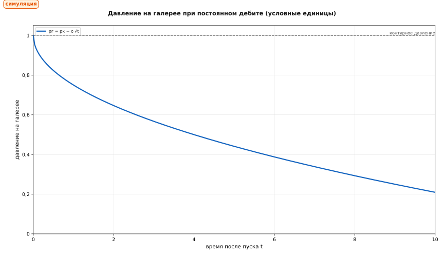

Путь › Как управление галереей меняет давление и отбор › Шаг 29 из 60
Дальняя граница даёт давление галереи
В книге: «Прямолинейно-параллельный фильтрационный поток упругой жидкости» стр. 487–488
Опирается на: шаг 28 «Давление из профиля скорости» (предпосылка), шаг 24 «Пуск галереи с постоянным дебитом» (предпосылка)
Суть
Давление на галерее находят из условия: вдали давление равно контурному.
При постоянной скорости отбора давление на галерее падает пропорционально корню из времени.
Пороговая идея. При постоянном дебите переменной величиной становится давление на галерее. модель
Как это работает
Условие вдали
Чтобы найти давление на галерее, используют условие контурного давления на бесконечном удалении. стр. 487
«Чтобы найти закон изменения давления на галерее $p_\text{r}(t)$, подставим в (23.38) граничное условие $p(x, t) = p_\text{K}$ при $x \to \infty$.»
На бесконечности функция ошибок стремится к единице. стр. 487
«Так как при $x \to \infty$ $\text{erf} \left( \frac{x}{2\sqrt{\kappa t}} \right) \to 1$»
Но произведение расстояния на дополнение erf даёт неопределённость. Дополнение стремится к нулю, а расстояние растёт без предела. стр. 487
«дает неопределенность вида $\infty \times 0$.»
Раскрытие неопределённости
Для этого используют правило Лопиталя — предел отношения считают через отношение производных. стр. 487
«Раскрывая ее по правилу Лопиталя, можно показать»
Результат: вдали это произведение стремится к нулю. стр. 488
«это произведение стремится к нулю.»
Экспонента с отрицательным квадратом расстояния в показателе тоже стремится к нулю. стр. 488
«Учитывая также, что $e^{-x^2/4kt} \to 0$ при $x \to \infty$, получаем»
Давление на галерее
При заданной скорости падение давления на галерее растёт как корень из времени. стр. 488
«$$p_{\mathrm{r}}(t) = p_{\mathrm{k}} - \frac{2\mu w_1}{k\sqrt{\pi}} \sqrt{kt}$$»

Тот же закон записывают через объёмный дебит и поперечное сечение пласта. стр. 488
«$$p_{\mathrm{r}}(t) = p_{\mathrm{k}} - \frac{Q\mu}{Bh} \frac{2}{k} \frac{\sqrt{kt}}{\sqrt{\pi}}. \quad (23.39)$$»
В этом режиме меняется именно давление на галерее. Дебит постоянен. стр. 488
По шагам
Как найти давление галереи
- При фиксированном времени возьмите предел поля давления вдали от галереи. стр. 487
- Раскройте неопределённость в произведении и найдите предел экспоненты. стр. 487–488
- Выразите давление галереи и замените скорость отношением дебита к сечению. стр. 488
Формулы
Давление галереи через скорость; под корнем восстановлена пьезопроводность по исходному пространственному решению. стр. 488
| Обозначение | Что это | Единицы |
|---|---|---|
| $p_{\mathrm{r}}(t)$ | давление галереи | Па |
| $p_{\mathrm{k}}$ | начальное и контурное давление | Па |
| $\mu$ | динамическая вязкость жидкости | Па·с |
| $w_1$ | заданная скорость фильтрации у галереи | м/с |
| $k$ | проницаемость пласта | м² |
| $\pi$ | число пи | безразмерно |
| $\kappa$ | коэффициент пьезопроводности | м²/с |
| $t$ | время от пуска | с |
Давление галереи через объёмный дебит; под корнем восстановлена пьезопроводность. стр. 488
| Обозначение | Что это | Единицы |
|---|---|---|
| $p_{\mathrm{r}}(t)$ | давление галереи | Па |
| $p_{\mathrm{k}}$ | начальное и контурное давление | Па |
| $Q$ | объёмный дебит галереи | м³/с |
| $\mu$ | динамическая вязкость жидкости | Па·с |
| $B$ | ширина пласта | м |
| $h$ | толщина пласта | м |
| $k$ | проницаемость пласта | м² |
| $\kappa$ | коэффициент пьезопроводности | м²/с |
| $t$ | время от пуска | с |
| $\pi$ | число пи | безразмерно |
Что это значит для данных
Контурное давление превращает рассчитанный перепад в прогноз давления на галерее.
- Вход
- Контурное давление, дебит, толщина и ширина, время, вязкость, проницаемость, пьезопроводность.
- Выход
- Давление галереи по времени.
- Где ломается
- Закон получен для бессрочного удержания дебита в модельной постановке, а не гарантирует такую эксплуатацию.
Где здесь ручной труд специалиста
- Входные данные
- Контурное давление, дебит, толщина и ширина, время, вязкость, проницаемость, пьезопроводность.
- Ручные шаги
- Вычислить предел слагаемых отдельно, затем проверить единицы и заменить скорость на дебит через площадь.
- Точки суждения
- Отличить две похожие буквы для разных характеристик пласта.
- Время
- Ручная проверка предела и обозначений важнее подстановки параметров.
- Типичные ошибки
- Оставить проницаемость под корнем вместо пьезопроводности.
Аналогия модель
Дальняя граница фиксирует свободный уровень, как известное значение для калибровки смещения.
Где аналогия перестаёт работать: Это граничное условие физической модели, а не подгонка по одной случайной точке.
Глубже
Проверка k и κ модель
В экспоненте при описании предела и под корнем в итоговых строках буква k не согласуется с формулой поля давления. Под корнем нужна пьезопроводность κ: только тогда произведение со временем даёт квадрат длины; k вне корня остаётся проницаемостью.
Почему нельзя просто подставить единицу модель
Функция ошибок близка к единице, но расстояние неограниченно растёт. Перепишите произведение как отношение дополнения функции ошибок к обратному расстоянию и примените правило Лопиталя.
Новые понятия
- Галерея (gallery)
- Линейная выработка, через которую в этой задаче отбирают жидкость из пласта. модель
- Контурное давление (far-field pressure)
- В этой задаче — давление вдали от работающей галереи. модель
- Дебит (volumetric flow rate)
- Объём жидкости, отбираемый за единицу времени. модель
- Функция ошибок (error function)
- Нормированный интеграл функции вида e в степени минус квадрат; здесь описывает безразмерный профиль давления. модель
- Правило Лопиталя (L’Hôpital’s rule)
- Приём вычисления некоторых неопределённых пределов отношения через отношение производных. модель
- Пьезопроводность (hydraulic diffusivity)
- Способность среды передавать изменения давления диффузионным образом; коэффициент имеет размерность площади, делённой на время. модель
- Скорость фильтрации (Darcy velocity)
- Отношение объёмного расхода к полной площади поперечного сечения среды. модель
- Проницаемость (permeability)
- Свойство пористой среды пропускать жидкость под действием перепада давления. модель
Проверь себя
Верный ответ: Условие контурного давления на бесконечности; Правило Лопиталя для неопределённости; Предел экспоненты на удалении
Давление на галерее неизвестно; его находят из условия вдали. Где это в тексте (стр. 487) →
Расставьте шаги по порядку.
Перетащите пункты (мышью или пальцем за ⠿) или двигайте кнопками ↑ ↓.
- Выразите давление галереи и замените скорость отношением дебита к сечению.
- Раскройте неопределённость в произведении и найдите предел экспоненты.
- При фиксированном времени возьмите предел поля давления вдали от галереи.
Верный ответ: При фиксированном времени возьмите предел поля давления вдали от галереи. → Раскройте неопределённость в произведении и найдите предел экспоненты. → Выразите давление галереи и замените скорость отношением дебита к сечению.
Это порядок выкладки автора. Где это в тексте (стр. 488) →
Источник
Все утверждения шага с дословной цитатой автора и страницей книги (по PDF).
Для вычисления давления на галерее используют условие контурного давления на бесконечном удалении. вывод
«Чтобы найти закон изменения давления на галерее $p_\text{r}(t)$, подставим в (23.38) граничное условие $p(x, t) = p_\text{K}$ при $x \to \infty$.»
На бесконечном удалении функция ошибок стремится к единице. вывод
«Так как при $x \to \infty$ $\text{erf} \left( \frac{x}{2\sqrt{\kappa t}} \right) \to 1$»
Произведение расстояния и дополнения функции ошибок даёт неопределённость. вывод
«дает неопределенность вида $\infty \times 0$.»
Для раскрытия неопределённости используют правило Лопиталя. вывод
«Раскрывая ее по правилу Лопиталя, можно показать»
При удалении от галереи произведение расстояния на дополнение функции ошибок стремится к нулю. вывод
«это произведение стремится к нулю.»
Экспонента с отрицательным квадратом расстояния в показателе стремится к нулю на удалении. вывод
«Учитывая также, что $e^{-x^2/4kt} \to 0$ при $x \to \infty$, получаем»
При заданной скорости падение давления на галерее растёт как корень из времени. вывод
«$$p_{\mathrm{r}}(t) = p_{\mathrm{k}} - \frac{2\mu w_1}{k\sqrt{\pi}} \sqrt{kt}$$»
Тот же закон можно записать через объёмный дебит и поперечное сечение пласта. вывод
«$$p_{\mathrm{r}}(t) = p_{\mathrm{k}} - \frac{Q\mu}{Bh} \frac{2}{k} \frac{\sqrt{kt}}{\sqrt{\pi}}. \quad (23.39)$$»
На этот шаг опираются: шаг 30 «Когда постоянный дебит невозможен», шаг 50 «Давление у галереи и ошибка ПССС».